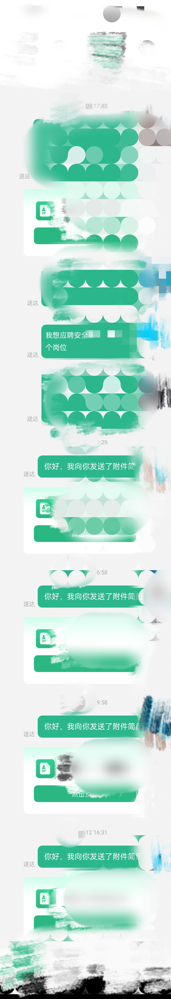

渗透测试怎么找工作
我工作找到有好几年了，说一下我是怎么找到工作的
我的情况：我是专科，学的不是计算机，没证书，没护网经历，没项目经历，没实习经历，没有src排名，只有一些src的经历
1.去boss，大学生就业，本地大学生就业，猎聘，智联招聘，前途无忧，应届生求职，微信上面，本地求职的app，google 。不要去国聘，国资小薪找工作
2.每天都去boss，大学生就业，本地大学生就业，猎聘，智联招聘，前途无忧，应届生求职，本地求职的app，微信上面搜索(选择最新，最近一天)，google(选择最近一天)，它们的职位每天都会有发布，每天花个一小时看看就可以了
3.boss直聘上面，有些渗透测试的职位在公司发布后的第一天hr会在线，后面就不会在线了
4.有些职位发布了几天后就会停止招聘，到时候你在boss直聘上面搜索都搜不到
5.安装一个油猴脚本，显示hr上一次在线的时间，最多选一星期在线的
|
|
6.面试前多背题目，↓↓↓↓↓↓↓下面的是别人写的题目↓↓↓↓↓↓↓↓
|
|
7.和hr沟通的时候要话术要好，不要和hr的沟通像人机一样。要多说几句话，要热情
|
|
6如果他已读不回，你要主动沟通
.jpg)
怎么提高找到工作的概率
1.能下线去面试就去线下面试，线下面试不会像线上那样要三面(三面意思：三次面试，第一次为线上技术面，第二次为线上技术面，第三次为线上自我介绍和面试官沟通)。线下面试hr会看到你这个人的精、气、神好不好，衣服干不干净，和人沟通是否有缺陷之类的，再和你聊一些技术
例子：我当时就是在boss上面找的工作，找了200家左右实习生的岗位，要我简历的14家，要了我简历后愿意和我继续聊下去的就5家(其它的公司要了我的简历后就不和我聊了，我后面追问hr：“你要我吗？"，hr已读不回)，要我面试的就4家，最后我就是线下面试才面试成功的
我就是技术不是很厉害，去的是小厂，去线下面试，hr就要我了
要我挖洞
2.在每年的春招，秋招的期间找到的工作概率大，这个时候有很多岗位发布
3.找内推
4.有证书
同一个公司，可以在不同的hr那里投简历
4.在毕业前，不管对方企业薪资高不高，挣不挣钱。建议尽量寻找信息安全相关的实习岗位，试试水。即使是短期的实习，也能让你接触到实际工作环境，了解行业规范和企业需求，同时积累工作经验。 有工作经验优先录取
5.挖掘一些SRC/CNVD/CVE； 有SRC挖掘经验，有CNVD/CVE证书的优先录取
6.在github/gitee上面有自己的开源项目(和安全工具相关)的
例子：有人自己在github上面编一些了一个二开的sqlmap，会优先录取
7.有cisp、cisp-pte、pmp、security、hicp、hcie、oscp等等证书的会优先录取
8.再网上报名一个知名的培训班，报了培训班会让hr觉得你是更有经验的
我去面试的时候，hr就问：“在哪里培训的？” 我：“在xxx培训的”
hr：“喔，xxx机构我知道，提有名的一家培训机构”
本地的优先
参加过ctf或者网络安全竞赛的优先
能尽快入职的优先
有社会工程学和钓鱼技术的优先
有参与大型攻防对抗项目经验的优先
参加过护网的优先
有红队，蓝队经验的优先
有长期维护的安全博客的优先
能独立镜像代码审计的优先
熟悉木马和免杀技术原来的，能绕过国内外杀软的优先
在tools，freebuf，seebug等网站发布过漏洞，网站的优先\
为什么找不到工作
面试的问题
123
我遇到的面试问题
123
要背的题目
123